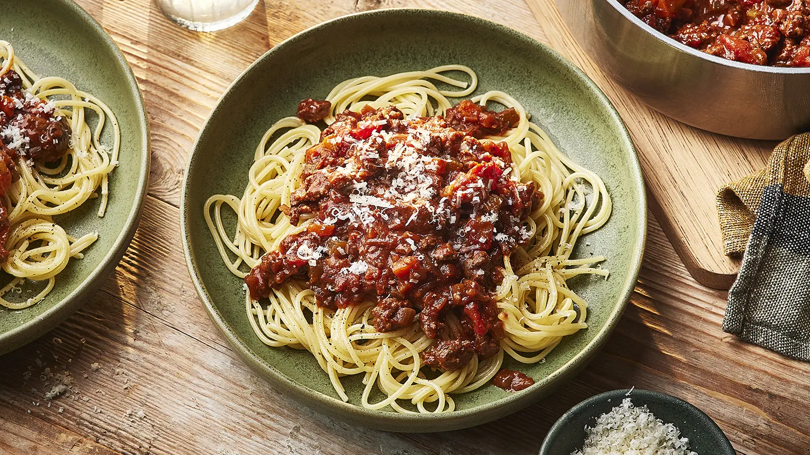

Spaghetti Bolognese

Description
This recipe details the ingredients necessary and outlines the steps required for making
spaghetti bolognese. The estimated times for this recipe are
25 minutes for preparation
and up to 1hr and 50 minutes for cooking
(2hr 15 minutes total).
Ingredients
- 1 tbsp olive oil
- 2 medium onions
- 2 carrots
- 2 garlic cloves
- 500g beef mince
- 2 x 400g tins chopped tomatoes
- 1 tsp dried oregano
- 2 bay leaves
- 2 tbsp tmato puree
- 1 beef stock
- 6 cherry tomatoes
- Grated cheese
- 400g spaghetti
Steps
- Place wok on medium heat and add olive oil.
- Add diced onions, carrots and minceed garlic, fry for 10 minutes. Stir often until
it softens.
- Increase heat to medium-high, add beef mince and cook, stirring for 3-4 minutes or until
the meat is browned all over.
- Add chopped tomatoes, dried oregano, bay leaves, tomato puree, beef stock and 6 halved
cherry tomatoes. Stir with a wooden spoon and break up chopped tomatoes if necessary.
- Bring to the boil, then reduce to a gentle simmer and cover with a lid. Cook for 1hr 15 mins
stirring occasionally, or until the sauce is at the desired thickness.
- When the bolognese sauce is nearly ready, cook spaghetii following pack instructions.
- Drain spaghetti and either stir into bolognese sauce or serve sauce on top. Add desired
amount of grated cheese.
Home